setValue() 함수로 설정하는 값이 선택 항목 목록 에 없는 경우, 처리 방법을 설정하는 예제입니다. 이 기능은 아래의 속성과 함수로 사용할 수 있습니다. - valueNotInList : (속성)설정된 DataList의 목록에 없는 값을 set하는 경우에 대한 처리방식 설정. - emptyItem : (속성)선택 항목에 없는 value나 index가 동적으로 설정하는 경우 빈 값으로 label과 value를 설정. - setValue : (함수)파라메터로 넘어온 값에 해당하는 선택 항목을 선택. - getSelectedIndex : (함수)선택된 항목의 인덱스를 반환.
선택 항목 목록에 없는 값은 무시하기
목록의 첫번째 항목을 표시하기
선택 항목 목록에 없는 값을 유지하기
선택 목록에 "Paris" 설정하기 버튼을 클릭합니다.
[브라우저(Chrome) 실행 예시]
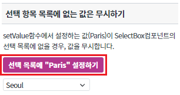
SelectBox컴포넌트의 선택 목록에 "Paris"가 없기 때문에 아래 그림과 같이 공백으로 표시하는 것을 확인할 수 있습니다.
[브라우저(Chrome) 실행 예시]
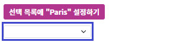
아래 그림과 같이 선택 목록에서 Jeju를 선택 후, 선택 목록에 "New York" 설정하기 버튼을 클릭합니다.
[브라우저(Chrome) 실행 예시]
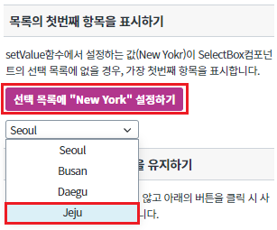
SelectBox컴포넌트의 선택 목록에 "New York"이 없기 때문에 아래 그림과 같이 선택 목록의 첫번째 항목을 표시하는 것을 확인할 수 있습니다.
[브라우저(Chrome) 실행 예시]
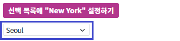
선택 목록에 "London" 설정하기 버튼을 클릭합니다.
[브라우저(Chrome) 실행 예시]
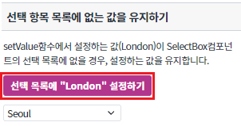
SelectBox컴포넌트의 선택 목록에 "London"이 없기 때문에 아래 그림과 같이 선택 목록에 없는 값인 London을 유지하는 것을 확인합니다. London의 인덱스 값은 -1 입니다.
[브라우저(Chrome) 실행 예시]
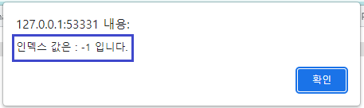
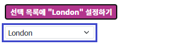
SelectBox컴포넌트의 값을 설정하기 위해 아래의 함수를 사용합니다.
[선택] setValue // 파라메터로 넘어온 값에 해당하는 선택 항목을 선택.
여러 항목을 한번에 설정할 경우 공백(space)를 이용하여 구분. 주어진 값에 대한 선택 항목이 없는 경우, 아무 동작이 일어나지 않음.
[소스 코드 예시]
/** * 버튼 [ 선택 목록에 "Paris" 설정하기 ] 클릭 시 */ scwin.btn_ex1_onclick = function (e) { // SelectBox 'sbx_exam1'에 "Paris"라는 데이터를 세팅합니다. sbx_exam1.setValue("Paris"); };
[필수] valueNotInList // 바인딩된 DataList의 목록에 없는 값을 set하는 경우(setValue API 또는 ref에 의해)에 대한 처리방식 설정. renderType="component"인 경우에만 지원한다.
renderType이 "native" 또는 "component"인 경우에는 속성 설정과 관계없이 "default"로 동작.
(옵션 설명) "default" (기본 값) : 해당 값을 무시한 다음, emptyItem 속성이 true이면 빈값을 보여주고 emptyItem 속성이 false이면 첫번째 항목 선택. "keepValue" : 해당 값을 유지. 목록에는 포함시키지 않으며 getValue()시 해당 값을 얻어온다. selectedIndex=-1 로 설정된다. 선택된 값이 변경되면 해당 값은 완전히 사라진다.
[필수] emptyItem //[default:false, true] (setValue, setSelectedIndex 등을 이용하여) 선택 항목에 없는 value나 index가 동적으로 설정하는 경우 빈 값(empty string)으로 label과 value를 설정.
빈 값으로 value가 설정된 선택 항목이 추가되거나 삭제될 경우, 첫번째 항목이 선택됨. (HTML select의 selectedIndex=-1과 동일)
단, emptyValue 속성을 사용하여 빈 값이 아닌 다른 값을 value로 설정 가능.
그림 1.웹스퀘어5 SP5 스튜디오의 Property View(속성창) 예시
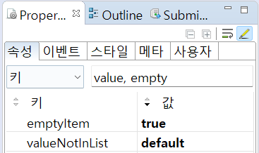
[소스 코드 예시]
<!-- selectBox의 소스 본문 예시 --> <xf:select1 valueNotInList="default" emptyItem="true" id="sbx_exam1"> <xf:choices> <xf:item> <xf:label><![CDATA[Seoul]]></xf:label> <xf:value><![CDATA[1]]></xf:value> </xf:item> <xf:item> <xf:label><![CDATA[Busan]]></xf:label> <xf:value><![CDATA[2]]></xf:value> </xf:item> <xf:item> <xf:label><![CDATA[Daegu]]></xf:label> <xf:value><![CDATA[3]]></xf:value> </xf:item> <xf:item> <xf:label><![CDATA[Jeju]]></xf:label> <xf:value><![CDATA[4]]></xf:value> </xf:item> </xf:choices> </xf:select1>
SelectBox컴포넌트의 값을 설정하기 위해 아래의 함수를 사용합니다.
[선택] setValue // 파라메터로 넘어온 값에 해당하는 선택 항목을 선택.
여러 항목을 한번에 설정할 경우 공백(space)를 이용하여 구분. 주어진 값에 대한 선택 항목이 없는 경우, 아무 동작이 일어나지 않음.
[소스 코드 예시]
/** * 버튼 [ 선택 목록에 "New York" 설정하기 ] 클릭 시 */ scwin.btn_ex2_onclick = function (e) { // SelectBox 'sbx_exam2'에 "New York"라는 데이터를 세팅합니다. sbx_exam2.setValue("New York"); };
[필수] valueNotInList // 바인딩된 DataList의 목록에 없는 값을 set하는 경우(setValue API 또는 ref에 의해)에 대한 처리방식 설정. renderType="component"인 경우에만 지원한다.
renderType이 "native" 또는 "component"인 경우에는 속성 설정과 관계없이 "default"로 동작.
(옵션 설명) "default" (기본 값) : 해당 값을 무시한 다음, emptyItem 속성이 true이면 빈값을 보여주고 emptyItem 속성이 false이면 첫번째 항목 선택. "keepValue" : 해당 값을 유지. 목록에는 포함시키지 않으며 getValue()시 해당 값을 얻어온다. selectedIndex=-1 로 설정된다. 선택된 값이 변경되면 해당 값은 완전히 사라진다.
[필수] emptyItem //[default:false, true] (setValue, setSelectedIndex 등을 이용하여) 선택 항목에 없는 value나 index가 동적으로 설정하는 경우 빈 값(empty string)으로 label과 value를 설정.
빈 값으로 value가 설정된 선택 항목이 추가되거나 삭제될 경우, 첫번째 항목이 선택됨. (HTML select의 selectedIndex=-1과 동일)
단, emptyValue 속성을 사용하여 빈 값이 아닌 다른 값을 value로 설정 가능.
그림 2.웹스퀘어5 SP5 스튜디오의 Property View(속성창) 예시
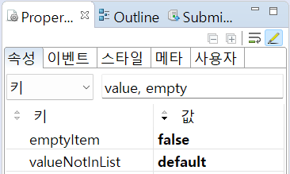
<!-- selectBox의 소스 본문 예시 --> <xf:select1 valueNotInList="default" emptyItem="false" id="sbx_exam2"> <xf:choices> <xf:item> <xf:label><![CDATA[Seoul]]></xf:label> <xf:value><![CDATA[1]]></xf:value> </xf:item> <xf:item> <xf:label><![CDATA[Busan]]></xf:label> <xf:value><![CDATA[2]]></xf:value> </xf:item> <xf:item> <xf:label><![CDATA[Daegu]]></xf:label> <xf:value><![CDATA[3]]></xf:value> </xf:item> <xf:item> <xf:label><![CDATA[Jeju]]></xf:label> <xf:value><![CDATA[4]]></xf:value> </xf:item> </xf:choices> </xf:select1>
SelectBox컴포넌트의 값을 설정하고, 선택된 항목의 인덱스를 반환하기 위해 아래의 함수를 사용합니다.
[선택] setValue // 파라메터로 넘어온 값에 해당하는 선택 항목을 선택.
여러 항목을 한번에 설정할 경우 공백(space)를 이용하여 구분. 주어진 값에 대한 선택 항목이 없는 경우, 아무 동작이 일어나지 않음.
[선택] getSelectedIndex // 선택된 항목의 인덱스를 반환. chooseOption 및 allOption 속성이 적용된 경우 해당 항목도 인덱스에 포함됨.
[소스 코드 예시]
/** * 버튼 [ 선택 목록에 "London" 설정하기 ] 클릭 시 */ scwin.btn_ex3_onclick = function (e) { // SelectBox 'sbx_exam3'에 "London"라는 데이터를 세팅합니다. sbx_exam3.setValue("London"); // SelectBox 'sbx_exam3'에 표시되고 있는 항목의 인덱스를 반환합니다. let index = sbx_exam3.getSelectedIndex(); alert("인덱스 값은 : " +index+ " 입니다."); };
[필수] valueNotInList // 바인딩된 DataList의 목록에 없는 값을 set하는 경우(setValue API 또는 ref에 의해)에 대한 처리방식 설정. renderType="component"인 경우에만 지원한다.
renderType이 "native" 또는 "component"인 경우에는 속성 설정과 관계없이 "default"로 동작.
(옵션 설명) "default" (기본 값) : 해당 값을 무시한 다음, emptyItem 속성이 true이면 빈값을 보여주고 emptyItem 속성이 false이면 첫번째 항목 선택. "keepValue" : 해당 값을 유지. 목록에는 포함시키지 않으며 getValue()시 해당 값을 얻어온다. selectedIndex=-1 로 설정된다. 선택된 값이 변경되면 해당 값은 완전히 사라진다.
그림 3.웹스퀘어5 SP5 스튜디오의 Property View(속성창) 예시
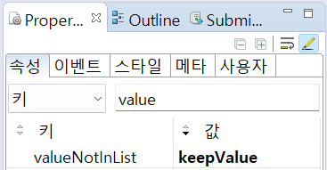
[소스 코드 예시]
<!-- selectBox의 소스 본문 예시 --> <xf:select1 valueNotInList="keepValue" id="sbx_exam3"> <xf:choices> <xf:item> <xf:label><![CDATA[Seoul]]></xf:label> <xf:value><![CDATA[1]]></xf:value> </xf:item> <xf:item> <xf:label><![CDATA[Busan]]></xf:label> <xf:value><![CDATA[2]]></xf:value> </xf:item> <xf:item> <xf:label><![CDATA[Daegu]]></xf:label> <xf:value><![CDATA[3]]></xf:value> </xf:item> <xf:item> <xf:label><![CDATA[Jeju]]></xf:label> <xf:value><![CDATA[4]]></xf:value> </xf:item> </xf:choices> </xf:select1>
valueNotInList
emptyItem
setValue
getSelectedIndex
[웹스퀘어5 SP5 개발 가이드] SelectBox
링크 : https://docs1.inswave.com/sp5_user_guide/8df43d1f59fab704#641326163f434b17
[웹스퀘어5 SP5 개발 가이드] SelectBox 목록에 없는 값의 처리
링크 : https://docs1.inswave.com/sp5_user_guide/8df43d1f59fab704#dbe5b7f6241f4d1a
SelectBox 목록에 없는 값의 처리
링크 : https://youtu.be/muK8LuJO2rk
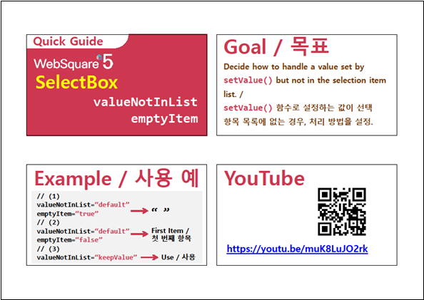